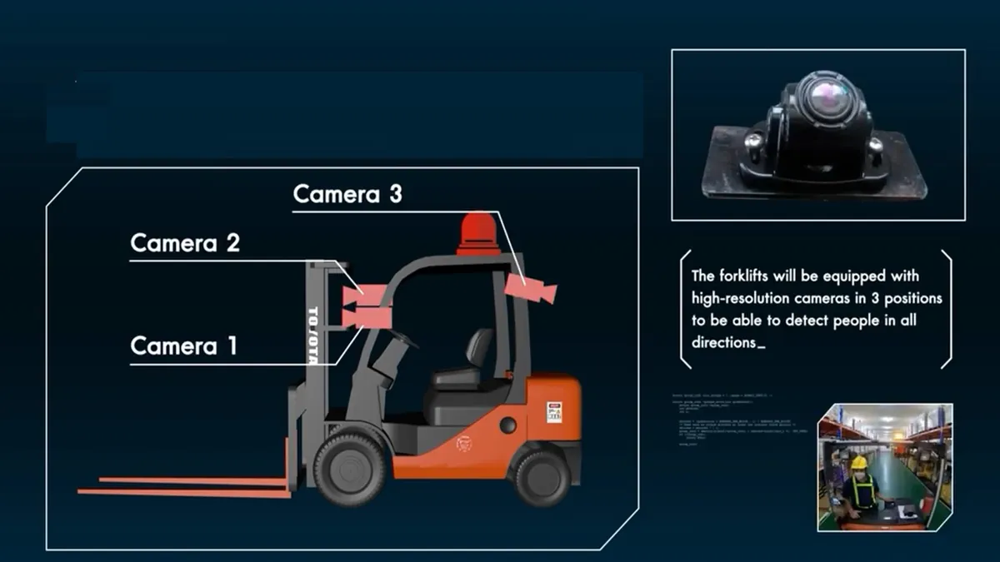
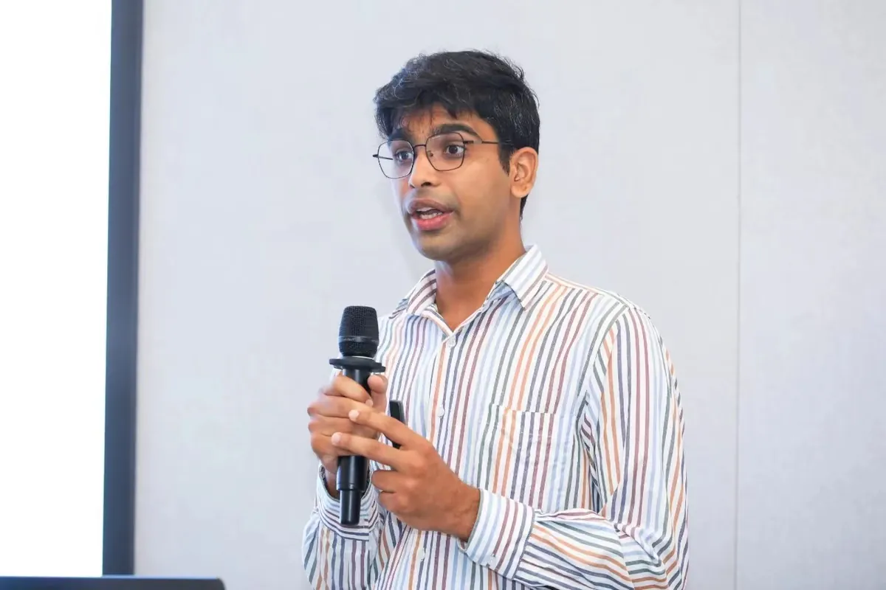
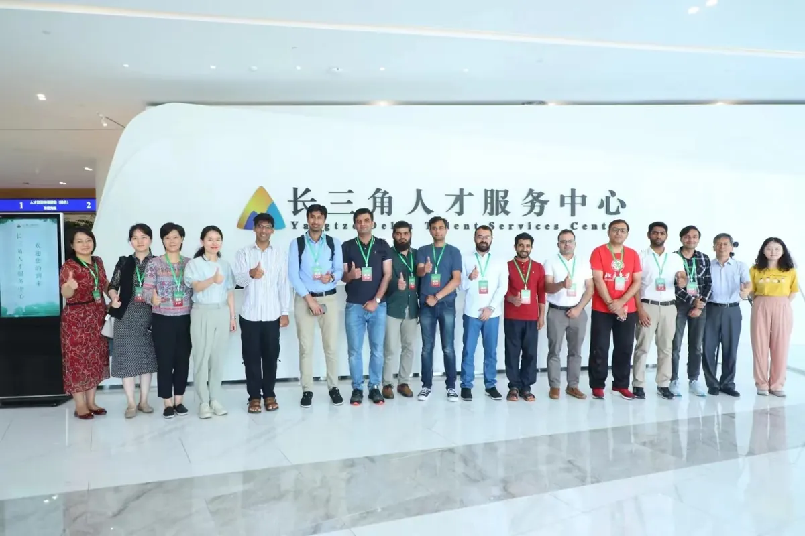
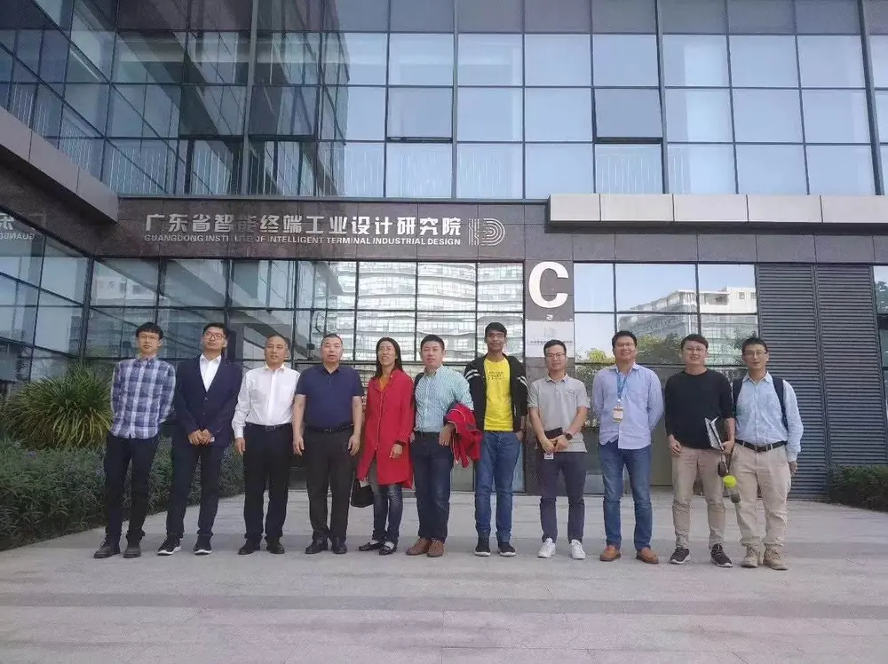
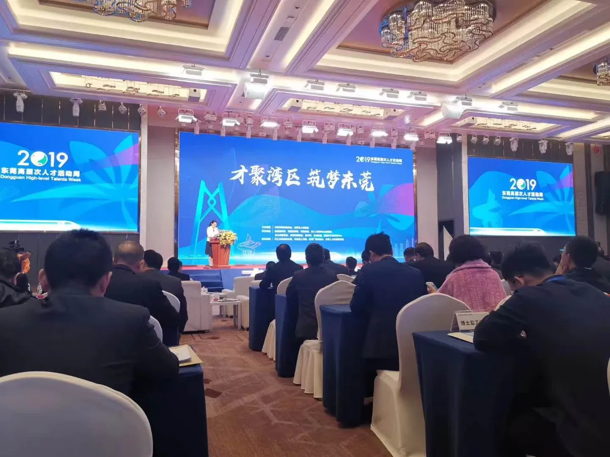
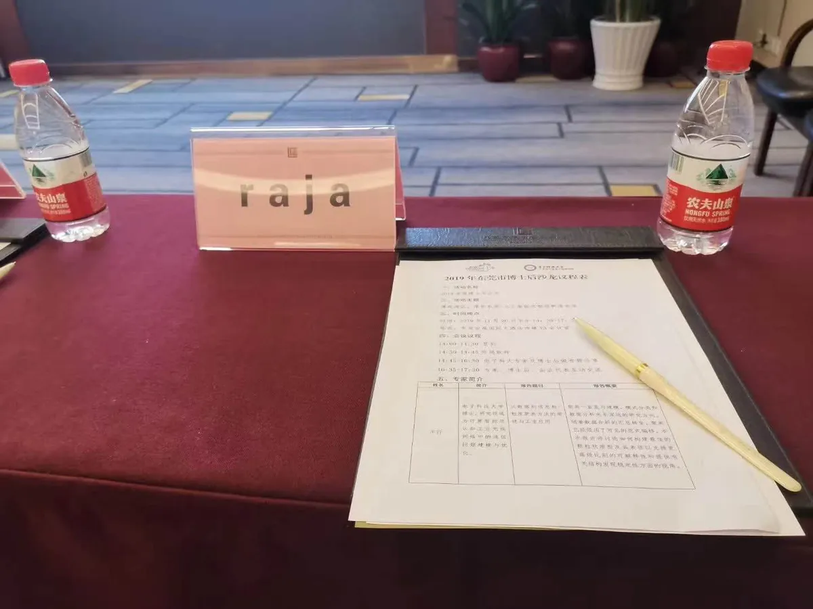
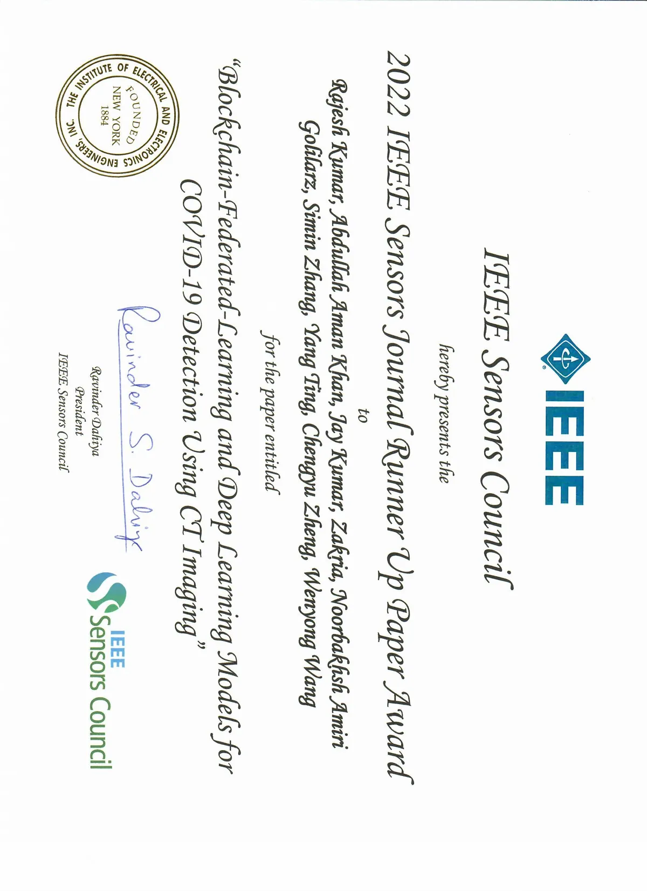
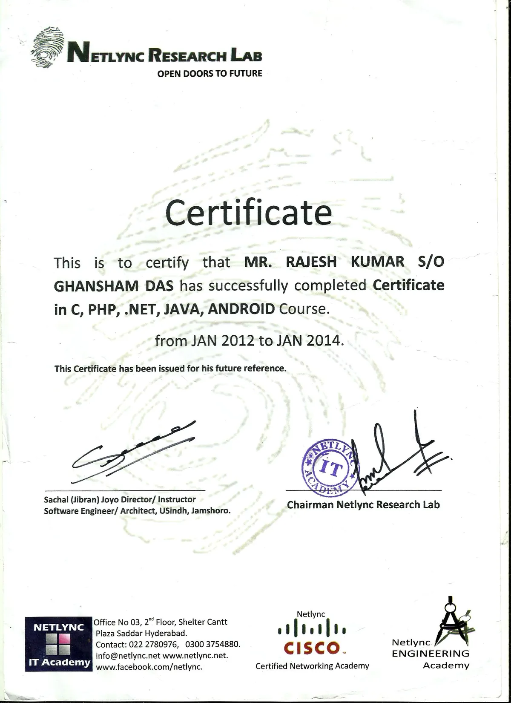
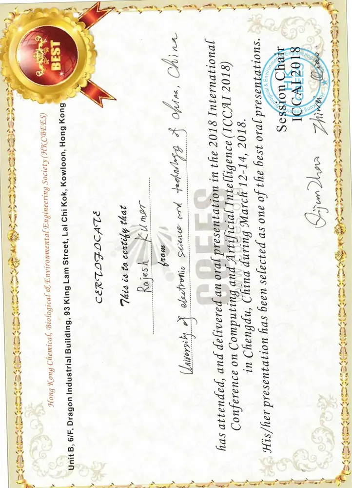

新 · 2026
智能体 AI · 科研基础设施
ResearchLedger
以证据为先的科研自动化，关联研究假设、实验运行、证据记录与论文结论。软件原型。
网络安全、大型语言模型、深度学习与区块链领域专家
Rajesh Kumar 博士现任北京航空航天大学杭州国际创新研究院 · 国际复杂性科学研究中心（杭州）博士后研究员，并在电子科技大学长三角研究院（湖州）继续保持研究实验室与科研合作（2021–2025 年任该院副研究员、教学研究员）。2019 年获电子科技大学计算机科学与技术博士学位。研究方向：区块链、联邦学习、医学影像人工智能、网络安全与智能体人工智能（Agentic AI）。 ORCID 0000-0003-0813-7485
数据截至 2026 年 10 月，点击各项可查看来源。
预印本： AutoResearch：基于执行验证的多智能体科研工作流自动化框架。
软件： ResearchLedger v2.0.1：以证据为先的科研自动化原型系统，已在 GitHub 公开。
论文： RePFL：面向皮肤癌检测的抗延迟个性化联邦学习，发表于 Scientific Reports.
预印本： AgentForge：面向自主软件工程的多智能体大语言模型框架。
论文： MID-LLM：区块链人工智能框架下基于大语言模型的医学影像诊断，发表于 IEEE Internet of Things Journal.
论文： 肝脏病灶分割的联邦迁移学习 （PET-CT 影像），发表于 Artificial Intelligence in Medicine.
精选研究原型，均有论文、预印本或公开代码支撑，并附演示或文档。
以证据为先的科研自动化，关联研究假设、实验运行、证据记录与论文结论。软件原型。
基于执行验证的多智能体框架，用于可靠的科研工作流自动化。
商用冰箱内置 AI 摄像头，实时跟踪库存并分析消费者行为。
实时 CT 影像分析，以区块链增强患者数据的隐私与安全。
基于摄像头的交通控制，借助 AI 车辆识别优化城市交通流。
基于摄像头的 AI 视觉取代边界线，实现自主、轻松的草坪养护。
精选代表作。 查看完整论文列表（英文）
R. Kumar, W. Ali, J. Ahmed, A. A. Khan, S. Zeng. arXiv 预印本 arXiv:2607.02520, 2026.
R. Kumar, A. A. Khan, J. Kumar, et al. IEEE Sensors Journal, 21(14), 16301–16314, 2021.
R. Kumar, W. Wang, J. Kumar, et al. Computerized Medical Imaging and Graphics, 87, 101812, 2021.
I. Ali, Y. Chen, N. Ullah, R. Kumar, W. He. IEEE Transactions on Vehicular Technology, 2021.
Y. Abuidris, R. Kumar, T. Yang, J. Onginjo. ETRI Journal, 43(2), 357–370, 2021.
R. Kumar, X. Zhang, W. Wang, et al. IEEE Access, 7, 64411–64430, 2019.
我为学生制作的免费、开放许可的学习资料：交互式课程平台、录制的课堂视频，以及配套的课件和代码。
我的人工智能与计算机科学交互式学习网站。每节课都配有简短讲解和可以动手尝试的内容。
16 门课程、211 节课，内容涵盖 Python、数据库、深度学习、大语言模型与 AI 智能体。
194 个实验，Python 与 SQL 直接在浏览器中运行，无需注册或安装。
原创课程采用 CC BY 4.0 许可，代码采用 MIT 许可，另有课件、笔记本和入门资料包。
数据来自 Learn.AI 网站，2026 年 10 月。
录制的课堂讲解，每门课都附有完整课件和代码示例。
通过技术专长、创意编程与高效领导推动创新
北京航空航天大学杭州国际创新研究院 · 国际复杂性科学研究中心（杭州）
博士后研究方向：智能体人工智能、医学智能、隐私保护学习与科研自动化。
电子科技大学长三角研究院（湖州）
2021–2025 年任副研究员、教学研究员，领导区块链、深度学习与计算机视觉研究项目并讲授本科与研究生课程；2026 年起继续保持研究实验室与科研合作。
电子科技大学
参与国家级项目，包括物联网恶意软件检测和基于区块链的安全数据共享。
AIMS IT学院
讲授了Java编程、PHP网页编程、Android开发、数据库设计和数据结构课程。
巴基斯坦信德大学，贾姆肖罗
开发了用于大学管理的网页应用和内部软件解决方案。
论文： 基于机器学习的安卓恶意软件检测
对网络安全和数据库管理系统进行了研究，并完成了一篇关于分布式环境下安全收费系统的论文。
专注于软件工程和数据库系统，完成了基于安卓技术的自动考勤系统的毕业设计。
在研项目在前，其后为已结题和历史项目。
开发了一种联邦学习模型，在分布式环境中安全共享敏感数据，提高数据隐私保护。
利用大型语言模型生成并解析医疗视觉数据，架起临床洞见与有影响力的视觉分析之间的桥梁。
采用联邦学习技术改进医疗影像分析，为医疗机构提供更准确的诊断结果。
构建并优化了大学的考试成绩和招生门户，提高用户体验并高效处理大量数据。
研究原型的完整介绍与视频演示，并附相关论文和代码链接。
该项目利用AI驱动的计算机视觉技术跟踪商业冰箱中的物品，提高供应链安全性和库存管理，从而减少浪费并改善补货效率。

Kumar Rajesh 博士，来自电子科技大学长三角研究院（湖州）的巴基斯坦专家，介绍了研究院的发展目标、发展路径及区位优势，并以“人工智能与环境”为主题向青年学者展示了该院当前的研究成果。
会议详情

Kumar Rajesh 博士，在人工智能和区块链领域享有盛誉的专家，以主题演讲者身份登台，阐述了“人工智能与区块链的未来”。凭借多年经验和对前沿技术的深刻理解，他以富有洞察力的愿景吸引了听众对这些技术变革潜力的关注。
他对广东智能终端工业设计研究所的访问，体现了其探索新前沿、推动技术进步的决心。






欢迎研究方向相近的研究人员和学生与我开展远程合作，所有合作均以线上方式进行。
raja@uestc.edu.cn
请注意：目前仅提供线上合作，暂无带薪职位、奖学金或线下岗位。